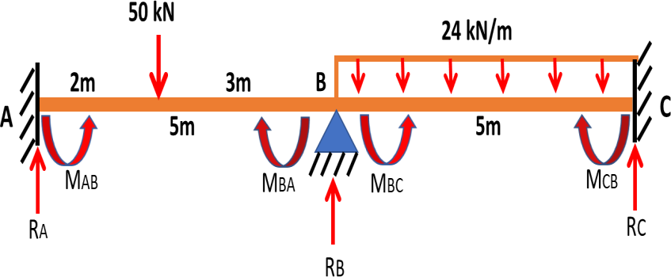
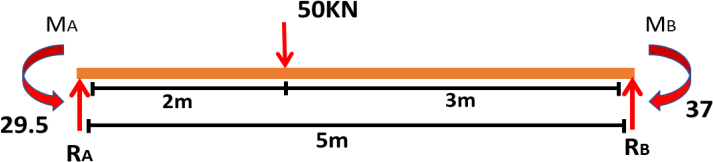
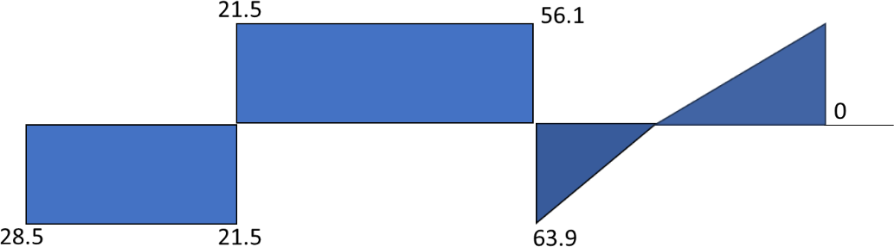

Moment Distribution Method
Two span continuous beam
Balance the internal moments at joint B, carry moments to the far ends, then find the support reactions.

Inspect the beam
Bring the beam diagram into the workspace to identify spans, loads, and moment directions.
Enter beam data
Use the values shown in the beam diagram. Lengths are in metres; loads are in kN and kN/m.
Check the point-load offsets and the length of span BC before submitting.
Fixed-end moments
Calculate the four end moments caused by the applied loads while both member ends are fixed.
LAB = a + b = m
MFAB = Pab² / LAB²
MFBA = -Pa²b / LAB²
MFBC = wLc² / 12; MFCB = -wLc² / 12
Anticlockwise end moment is positive.
Stiffness and distribution factors
A and C are fixed. At joint B, compare the stiffness of BA and BC.
KBA = 4EI / LAB
KBC = 4EI / Lc
DFBA = KBA / (KBA + KBC)
DFBC = KBC / (KBA + KBC)
The common factor 4EI cancels. DF values at the fixed supports A and C are zero.
Check: DFBA + DFBC = 1.
Distribute and carry over
Balance joint B, then carry half of each balancing moment to the far end.
Read the columns: AB and BA are the two ends of span AB; BC and CB are the two ends of span BC. BA and BC meet at joint B. Read the rows: enter the balancing distribution at BA/BC, then carry half of each value to the far ends AB/CB. A dash means that operation does not apply at that end.
| Moment row | AB far end A | BA joint B | BC joint B | CB far end C |
|---|---|---|---|---|
| Distribution factor | 0 | - | - | 0 |
| Fixed-end moment (kN·m) | - | - | - | - |
| Distribution (kN·m) | — | — | ||
| Carry-over (kN·m) | — | — | ||
| Final end moment (kN·m) | — | — | — | — |
Working at joint B
Read the final end moments
Each final value is the algebraic sum of the entries in its member-end column.
With anticlockwise positive, the clockwise final moment at CB is negative. The source table lists its magnitude as 56.5 kN·m.

Support reactions
Use member equilibrium to calculate the reactions on each span and the total reaction at B.
RA = (P b + MAB + MBA) / LAB
RB1 = P - RA
RB2 = (wLc²/2 + MBC + MCB) / Lc
RC = wLc - RB2; RB = RB1 + RB2
ANALYSIS COMPLETE
Shear-force diagram
Reactions from moment distribution define the shear changes at A, the point load, joint B, and C.
